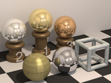
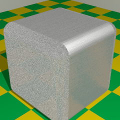
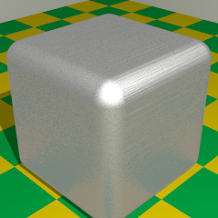

{kind=link}

 RC3Metal is a library module from the Persistence of Vision Ray Tracer (POV-Ray) Object Collection that defines macros for creating metallic textures. They produce results that are more realistic-looking than the metallic textures in the standard include files and, being parameter-driven, are more flexible. The idea is to have a small number of simple tools for creating a large variety of customized textures, rather than having a large number of fixed textures.
The primary rationale for this module is to automatically adjust the diffuse and ambient settings on metallic finishes in response to the specular reflection level and global illumination.
In addition to basic finishes, some common metal colors are suggested, and blurred reflection, galvanized metal, and a brushed normal are included.
The italicized nnnnnn in some of the file names represents the 6-digit number that is in the name of the .zip file.
| Key Files | |
|---|---|
| File | Description |
rc3metal.html |
The user manual (this document) |
rc3metal.inc |
The RC3Metal software |
rc3metal.jpg |
Sample output |
rc3metal.pov |
A demonstration scene description file |
rc3metal_brushed1.png |
Illustrations for the user manual |
rc3metal_brushed2.png |
|
READMEnnnnnn.html |
Important information about using the POV-Ray Object Collection |
| Other Files | |
| File | Description |
rc3metal_brushed.pov |
A brushed normal demonstration scene description file |
rc3metal.css |
A file used by the user manual |
rc3metal_demo.css |
Feature demonstration files |
rc3metal_demo.pov | |
rc3metal_demo_blur.ini | |
rc3metal_demo_colors.ini | |
rc3metal_demo_compg.ini | |
rc3metal_demo_compm.ini | |
rc3metal_demo_compt.ini | |
rc3metal_demo_galv.ini | |
rc3metal_demo_index.html | |
rc3metal_description.txt |
A brief description of RC3Metal |
rc3metal_keywords.txt |
A list of keywords |
rc3metal_prereqs.txt |
Prerequisites (empty file) |
rc3metal_thumbnail.jpg |
An illustration for the user manual |
cc-LGPL-a.png |
Administrative files |
Versionnnnnnn.js |
|
Note: The file rc3metal_cc-lgpl.png is no longer used.
RC3Metal requires POV-Ray version 3.5 or later.
All file names in this module and all global and local identifiers defined in rc3metal.inc comply fully with the Object Collection naming standards, as revised August 2008 and proposed August 2012. The prefixes for this module are “rc3metal” and “rc3m,” including any uppercase and lowercase variants; to avoid conflicts, do not declare identifiers that start with these prefixes plus an underscore.
The standard include file functions.inc is used by rc3metal.inc.
#include "rc3metal.inc"
Including the file more than once is harmless, though unnecessary.
#version less than 3.7), I strongly recommend setting the following prior to using the macros:
#declare RC3M_Ambient = 0;
The following parameters may be modified by declaring them prior to #including rc3metal.inc.
| Parameter | Type | Description | Default |
|---|---|---|---|
RC3M_Albedo |
float/Boolean |
If true and if the POV-Ray version (or If false or if the POV-Ray version (or |
yes |
RC3M_Ambient |
color | Set this to whatever value you use for #default { finish { ambient } }. If you do not change the default ambient finish, you may ignore this parameter. If you are using radiosity with a version of POV-Ray older than 3.7 (or with #version less than 3.7), I strongly recommend setting both values to zero. |
rgb 0.1 |
RC3M_Debug |
float/Boolean | If true, the finish and pigment macros will write information to the debug stream. | off |
RC3M_Diffuse |
float | Set this to whatever value you use for #default { finish { diffuse } }. If you do not change the default diffuse reflection finish, you may ignore this parameter. |
0.6 |
RC3M_Seed |
float | A seed for stochastic (pseudorandom) effects. | 0 |
Note: RC3M_Ambient and RC3M_Diffuse are used by the macros as guidelines for setting ambient values on the metallic finishes. Setting these parameters does not affect the scene’s default finish; it is still up to the user to issue the appropriate #default directive.
Returns a pigment and a metallic finish. This macro may be called from within a texture{} statement. quick_color is set as described under RC3Metal_Pigment().
| Formal Parameter | Type | Description |
|---|---|---|
c_Color |
color | The metal’s color. |
Specularity |
float | The amount of specular reflection. |
Diffuse_part |
float | The diffuse value that the metal would have if it had no specular reflection. |
Returns an object with blurred reflection. It uses the technique described in the POV-Wiki Knowledgebase, but applied in a manner that prevents runaway calculations when there are mutually reflecting surfaces.
| Formal Parameter | Type | Description |
|---|---|---|
o_Object |
object | The object to which to apply the texture. |
t_Base |
texture | The shiny texture to be blurred. (Note: if a normal is desired, the macro RC3Metal_Normal_blur() should be used instead.) |
Blurriness |
float | The amount of blurriness. |
Scale |
float | The scaling of the blur normals. |
Samples |
float | The number of blur normals to be averaged. |
Returns a texture with blurred reflection. The technique is described in the POV-Wiki Knowledgebase.
Warning: Use of this macro with mutually reflecting surfaces may result in a catastrophic slowdown in rendering, due to a runaway proliferation of rays to be calculated. This can be avoided by using the macro RC3Metal_Blur() or by doing several renders with RC3Metal_Blur_t() passing 1 for the Samples argument, then averaging the images with image-editing software. If averaging several renders, be sure to set RC3M_Seed to a different value for each render, and use a high dynamic range format (+FE or +FH) for best results with specular highlights.
| Formal Parameter | Type | Description |
|---|---|---|
t_Base |
texture | The shiny texture to be blurred. (Note: if a normal is desired, the macro RC3Metal_Normal_blur_t() should be used instead.) |
Blurriness |
float | The amount of blurriness. |
Scale |
float | The scaling of the blur normals. |
Samples |
float | The number of blur normals to be averaged. |
Returns a metallic finish.
| Formal Parameter | Type | Description |
|---|---|---|
Specularity |
float | The amount of specular reflection. |
Diffuse_part |
float | The diffuse value that the metal would have if it had no specular reflection. Values from 0.6 to 0.8 work well. |
Returns a galvanized texture.
| Formal Parameter | Type | Description |
|---|---|---|
c_Dull |
color | The color of the duller parts of the texture. |
c_Shiny |
color | The color of the shinier parts of the texture. |
Dull |
float | The amount of specular reflection of the duller parts of the texture. |
Shiny |
float | The amount of specular reflection of the shiniest parts of the texture. |
Dark |
float | The amount of diffuse reflection of the darkest parts of the texture (before adjustment for specular reflection). |
Light |
float | The amount of diffuse reflection of the lightest parts of the texture (before adjustment for specular reflection). |
Shine |
float | The amount of shiny vs dull crystals: 0.0 = no shiny crystals, 1.0 = maximum shiny crystals. |
Returns an object with a texture that has a normal and a blurred reflection. It uses the technique described in the POV-Wiki Knowledgebase, but applied in a manner that prevents runaway calculations when there are mutually reflecting surfaces.
| Formal Parameter | Type | Description |
|---|---|---|
o_Object |
object | The object to which to apply the texture. |
t_Base |
texture | The shiny texture to be blurred. |
Blurriness |
float | The amount of blurriness. Note that this should be double the value that would be used in RC3Metal_Blur(). |
Scale |
float | The scaling of the blur normals. |
Samples |
float | The number of blur normals to be averaged. |
n_Normal |
normal | A normal to be applied to the base texture. Note that the bump_size should be double that of the original non-blurred normal. If the original normal does not have a bump_size, then use bump_size 1 in the blurred normal. |
Returns a texture that has a normal and a blurred reflection. The technique is described in the POV-Wiki Knowledgebase.
Warning: Use of this macro with mutually reflecting surfaces may result in a catastrophic slowdown in rendering, due to a runaway proliferation of rays to be calculated. This can be avoided by using the macro RC3Metal_Normal_blur() or by doing several renders with RC3Metal_Normal_blur_t() passing 1 for the Samples argument, then averaging the images with image-editing software. If averaging several renders, be sure to set RC3M_Seed to a different value for each render, and use a high dynamic range format (+FE or +FH) for best results with specular highlights.
| Formal Parameter | Type | Description |
|---|---|---|
t_Base |
texture | The shiny texture to be blurred. |
Blurriness |
float | The amount of blurriness. Note that this should be double the value that would be used in RC3Metal_Blur_t(). |
Scale |
float | The scaling of the blur normals. |
Samples |
float | The number of blur normals to be averaged. |
n_Normal |
normal | A normal to be applied to the base texture. Note that the bump_size should be double that of the original non-blurred normal. If the original normal does not have a bump_size, then use bump_size 1 in the blurred normal. |
Returns a pigment with quick_color set to compensate for the settings in RC3Metal_Finish(). This works well for quality settings 2 through 5, but results in an oversaturated color at quality settings 0 and 1.
| Formal Parameter | Type | Description |
|---|---|---|
c_Color |
color | The metal’s color. |
Specularity |
float | The amount of specular reflection. |
Redefines the functions (q.v.) that are used to determine specular highlight and brilliance finishes.
These arguments are floats, not functions! The functions will be defined automatically, based on the float values.
| Formal Parameter | Type | Description |
|---|---|---|
Hilite |
float | The amount of highlight on a surface with no specular reflection; i.e., the float value to be returned by RC3M_fn_Specular(0.0). RC3M_fn_Specular(1.0) will be set to return 1.0, and for intermediate reflection values, the highlight value will be interpolated. |
Brilliance |
float | A constant brilliance float value to be returned by RC3M_fn_Brilliance(). |
Note: Theoretically, a surface with no specular reflection has no highlight; a low-level highlight is thus a sign of highly blurred reflection. However, this reflection is subtle and often not worth modeling, so a Hilite argument greater than zero is not unreasonable.
Example:
RC3Metal_Set_functions (0.0, 1.0) |
|
|---|---|
| RC3Metal_Finish() Call | Resulting Finish Settings |
RC3Metal_Finish (0.0, 0.6) |
specular albedo 0.0 metallic brilliance 1.0 |
RC3Metal_Finish (0.5, 0.6) |
specular albedo 0.5 metallic brilliance 1.0 |
RC3Metal_Finish (1.0, 0.6) |
specular albedo 1.0 metallic brilliance 1.0 |
Example:
RC3Metal_Set_functions (0.2, 1.75) |
|
|---|---|
| RC3Metal_Finish() Call | Resulting Finish Settings |
RC3Metal_Finish (0.0, 0.6) |
specular albedo 0.2 metallic brilliance 1.75 |
RC3Metal_Finish (0.5, 0.6) |
specular albedo 0.6 metallic brilliance 1.75 |
RC3Metal_Finish (1.0, 0.6) |
specular albedo 1.0 metallic brilliance 1.75 |
(If the albedo keyword is unavailable or if RC3Metal_Albedo is false, the above specular values will be automatically adjusted to appear as if the albedo keyword had been used.)
Redefines the specular highlight and brilliance functions (q.v.) such that the specular highlight compensates exactly for the reduction in albedo caused by the brilliance.
Side effect: Sets RC3Metal_Albedo to false, as using diffuse albedo would defeat the purpose of this macro. The specular value will be automatically adjusted to appear as if the albedo keyword had been used.
| Formal Parameter | Type | Description |
|---|---|---|
Hilite |
float | The amount of highlight on a surface with no specular reflection; i.e., the float value to be returned by RC3M_fn_Specular(0.0). RC3M_fn_Specular(1.0) will be set to return 1.0, and for intermediate reflection values, the highlight value will be interpolated. |
Note: Theoretically, a surface with no specular reflection has no highlight; a low-level highlight is thus a sign of highly blurred reflection. However, this reflection is subtle and often not worth modeling, so a Hilite argument greater than zero is not unreasonable. RC3Metal_Set_highlight() is an attempt to put some realism behind this fakery.
Returns a metallic texture. quick_color is set as described under RC3Metal_Pigment().
| Formal Parameter | Type | Description |
|---|---|---|
c_Color |
color | The metal’s color. |
Specularity |
float | The amount of specular reflection. |
Diffuse_part |
float | The diffuse value that the metal would have if it had no specular reflection. Values from 0.6 to 0.8 work well. |
These macros return a color converted to a 3-D vector (i.e., without the filter and transmit components).
| Formal Parameter | Type | Description |
|---|---|---|
c_Color |
color | The color to be converted. (This argument is input-only, and is not changed.) |
| Identifier | Type | Description | Value |
|---|---|---|---|
RC3M_fn_Brilliance |
function | Functions that are used by the macros to determine finish values as functions of specular reflection.
Unlike the diffuse and ambient adjustments, there is no rigorous physical basis for these functions. The brilliance function can be changed using macro |
N/A |
RC3M_fn_Roughness |
function | ||
RC3M_fn_Specular |
function | A function that is used by the macros to determine the specular highlight value as a function of specular reflection. The value returned will then be adjusted for albedo according to roughness. This function can be changed using macro RC3Metal_Set_functions() or RC3Metal_Set_highlight(); or you may #undef and redefine it after including rc3metal.inc.
|
N/A |
RC3M_n_Brushed |
normal | A brushed metal normal similar to that of texture Brushed_Aluminum in textures.inc. The grain is parallel to the x-axis. This normal is smoother where the x-component of the unperturbed surface normal is non-zero.  |
N/A |
RC3METAL_VERSION |
float | The RC3Metal version, in case the scene file needs that information. | 1.21 |
The following color values are estimated from hardware from The Home Depot, household articles, illustrations from Metallium, spectral data on the Web (which are never the same from one site to the next), and loose pocket change. They have not been measured; for actual sample measurements, I suggest LightsysIV. N.B. The LightsysIV measurements tend to be about half as bright as corresponding RC3Metal color suggestions.
| Identifier | Type | Notes | |
|---|---|---|---|
RC3M_C_ALUMINIUMRC3M_C_ALUMINUM |
color | Aluminum/aluminium | |
RC3M_C_BRASS_COOL |
color | A harsh, cold, yellow brass (a doorknob) | The brasses and bronzes are on the light side, so you may want to darken them for an older look. |
RC3M_C_BRASS_LIGHT |
color | A softer, light warm-hued brass (a brass-plated binder clip) | |
RC3M_C_BRASS |
color | A deeper, warm-hued brass (a chalice or musical instrument) | |
RC3M_C_BRASS_WARM |
color | A very deep orange brass (some hardware) | |
RC3M_C_BRONZE_NEW |
color | A new, polished bronze with no patina | |
RC3M_C_BRONZE_COOL |
color | Bronze can look like anything. These values are based on articles I have seen in novelty stores and in The Home Depot, but they may well have been painted with fake bronze paint. | |
RC3M_C_BRONZE |
color | ||
RC3M_C_BRONZE_WARM |
color | ||
RC3M_C_CHROME |
color | Electroplated chromium over nickel | |
RC3M_C_COPPER |
color | Brand new copper piping | |
RC3M_C_COPPER_LIGHT |
color | A freshly minted American penny, or packaged copper items | |
RC3M_C_GOLD |
color | A warm gold | |
RC3M_C_GOLD_LIGHT |
color | A yellower gold | |
RC3M_C_NICKEL |
color | Household fixtures | |
RC3M_C_PENNY |
color | An American penny that’s been well-handled, but hasn’t lost its shine; or copper piping that’s been sitting around for a while | |
RC3M_C_SILVER |
color | Silver | |
RC3M_C_SILVER_COIN |
color | Copper-nickel alloy | |
RC3M_C_STAINLESS |
color | Stainless steel (eating utensils) | |
RC3M_C_STAINLESS_WARM |
color | A warmer, lighter-colored stainless steel | |
RC3M_C_STEEL |
color | Steel | |
RC3M_C_ZINC |
color | Screws, hurricane connectors | |
RC3M_C_ZINC_COOL |
color | Old fence post | |
Any identifiers in rc3metal.inc that are not documented in this manual are considered “private” or “protected,” and are subject to change or elimination in a future update.
Included in this distribution is a scene file that demonstrates various features of RC3Metal. Due to the large number of images (more than 100), they have not been pre-rendered. You can create them yourself by rendering each of the .ini files in the distribution. You can then view the demos by viewing the file rc3metal_demo_index.html with your Web browser.
The .ini files are preset to POV-Ray version 3.5. If you have POV-Ray 3.7, you can take advantage of 3.7 improvements by putting Version=3.7 on the command line (or at the end of the command line if you are working from a terminal window).
In order to keep your Object Collection folder uncluttered, you may want to keep the demos in a separate folder. After creating this folder, move all files whose names start with “rc3metal_demo” into it. (This folder would not need to be in your library path.)
A description of each of the demos follows:
rc3metal_demo_blur.ini
RC3Metal_Blur_t().
rc3metal_demo_colors.ini
rc3metal_demo_compg.ini
golds.inc alongside comparable finishes from RC3Metal_Finish().
rc3metal_demo_compm.ini
metals.inc alongside comparable finishes from RC3Metal_Finish().
rc3metal_demo_compt.ini
textures.inc alongside those same textures with the finish component replaced with a comparable RC3Metal_Finish().
rc3metal_demo_galv.ini
Shine values passed to RC3Metal_Galvanized_t().
| Version | Date | Notes |
|---|---|---|
| N/A | 2004 – 2008 |
|
| 1.0 | 2013 March 9 |
|
| 1.1 | 2013 April 23 |
|
| 1.2 | 2013 September 6 |
|
| 1.2.1 | 2016 March 11 |
|